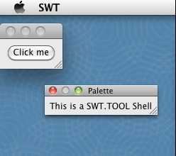

| Tool shell support on Cocoa |
The Cocoa port now supports the SWT.TOOL style bit. See Snippet 344.
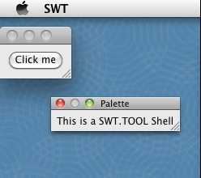 |
| Browser on Linux defaults to WebKitGTK+ |
Browsers created with style SWT.NONE on Linux now use WebKitGTK+ as the default native renderer if it is found on the user's machine. If WebKitGTK+ is not found then a Mozilla-based native renderer is used instead.
|
| Wrappable buttons |
The button control now supports the SWT.WRAP style bit on all platforms. This allows for the creation of buttons that will automatically wrap any text when resized. For more info, please see Snippet 345. 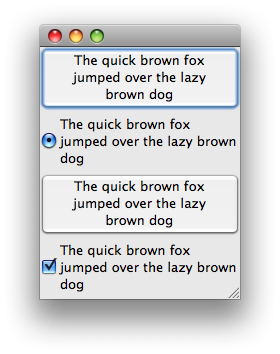 |
| AIX for GTK 32/64 |
2 new GTK ports for AIX (one for 32 bit and another one for 64 bit architectures) have joined the lineup of supported configurations for which SWT and Eclipse are routinely built. 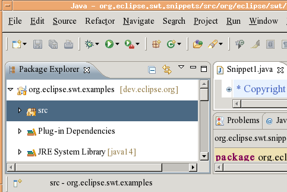 |
| Cocoa Display.getMenuBar |
Display.getMenuBar() is a new API that returns a Menu that is displayed when no Shell is visible or when the active Shell doesn't have a menu bar of its own. Right now, this API is only available in the Mac OS X Cocoa port. It will return null on all other platforms. See this snippet for an example of how you can use this API in a cross-platform application.
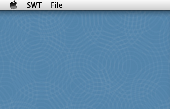 |
| Cocoa Shell.getToolbar |
Shell.getToolBar() returns a ToolBar that appears in the title area of the Shell. ToolItems added to that ToolBar will have the look and feel of the platform. You can also add special separator items that provide a fixed-width spacer or a flexible-width spacer that pushes the ToolItems on either side of it out to the next fixed item, or the edge of the Shell. Please note that this API is a work in progress, and is currently Cocoa-only. Please follow bug 222859 or watch future N&N announcements for more info. 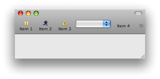 |
| Text setTextChars |
There is new API in Text that allows applications to get and set text as a char array in a secure manner. For more info, please see Snippet 346. |
| AccessibleEditableText support | SWT Accessibility now has API to support the platform's EditableText interface used by accessibility tools such as speech recognition systems. For details, see bug 324005. |
| HPUX for GTK |
A new GTK port for HPUX (32 bit) has joined the lineup of supported configurations for which SWT and Eclipse are routinely built.
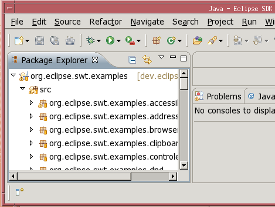 |
| Duplex printing |
New API has been added to PrinterData to enable duplex (double-sided) printing without using the PrintDialog.
This can also be used to seed the PrintDialog's duplex setting before presenting it to the user.
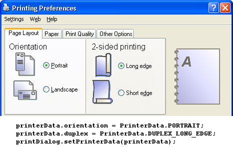 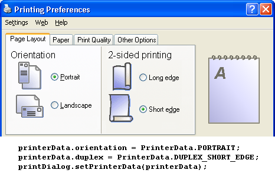 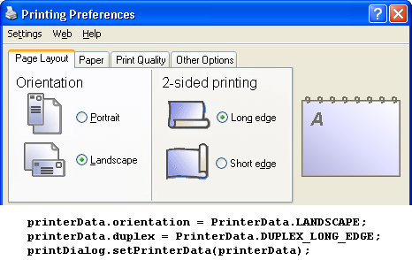 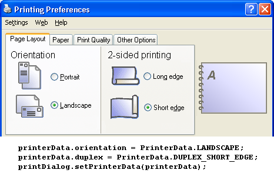 |
| Improved Cocoa DateTime support |
On Cocoa, the DateTime control now supports the SWT.DROP_DOWN option bit.
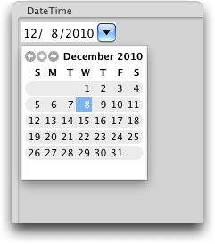 |
| Touch and gesture support | If your hardware supports it, you can now listen for touches or
gestures on SWT controls. Four standard gestures are supported: two-finger panning,
rotation, magnification, and swipe (three fingers on Mac OS X, flicks on Windows).
You can also listen for 'raw' touches on a MacBook touchpad, Magic Trackpad or
Magic Mouse, or a touch-sensitive display that is supported by Windows Touch.
For examples of how to use the touch and gesture support see
Snippet 352
and Snippet 353.
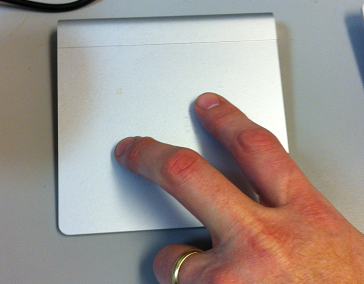 |
| WebKit everywhere | The SWT browser now supports using WebKit as its native renderer
on Windows. Consequently, browsers created with new style SWT.WEBKIT
will use WebKit on Windows, Linux and OS X, provided that the user's machine satisfies the
runtime requirements.
For an example of using WebKit see Snippet 351.
|
| Change orientation | New methods have been added to Control and Menu to allow the application to change the orientation of these interface elements. Prior to the introduction of these methods, the application was required to recreate the element to achieve the same result. Note: these methods are only relevant on platforms where BIDI mirroring is supported. See Bug 29779 for more information. |
| Cocoa Display.getSystemMenu |
Display.getSystemMenu() is a new API that returns the system-provided menu for the application.
You can access menu items in the system menu by comparing a MenuItem's id with various SWT.ID_* constants.
Right now, this API is only available in the Mac OS X Cocoa port. It will return null on all other platforms.
See this snippet
for an example of how you can use this API in a cross-platform application.
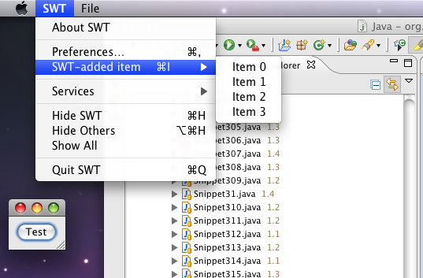 |
| Improved GTK DateTime support |
On GTK, the DateTime control now supports SWT.DROP_DOWN style to drop down a calendar from a date editor.
All platforms now support this style, and the HINT keyword has been removed from the SWT.DROP_DOWN style bit.
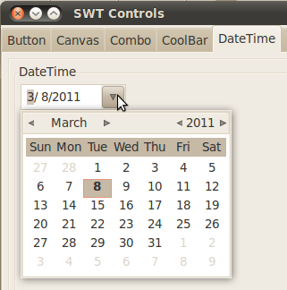 |